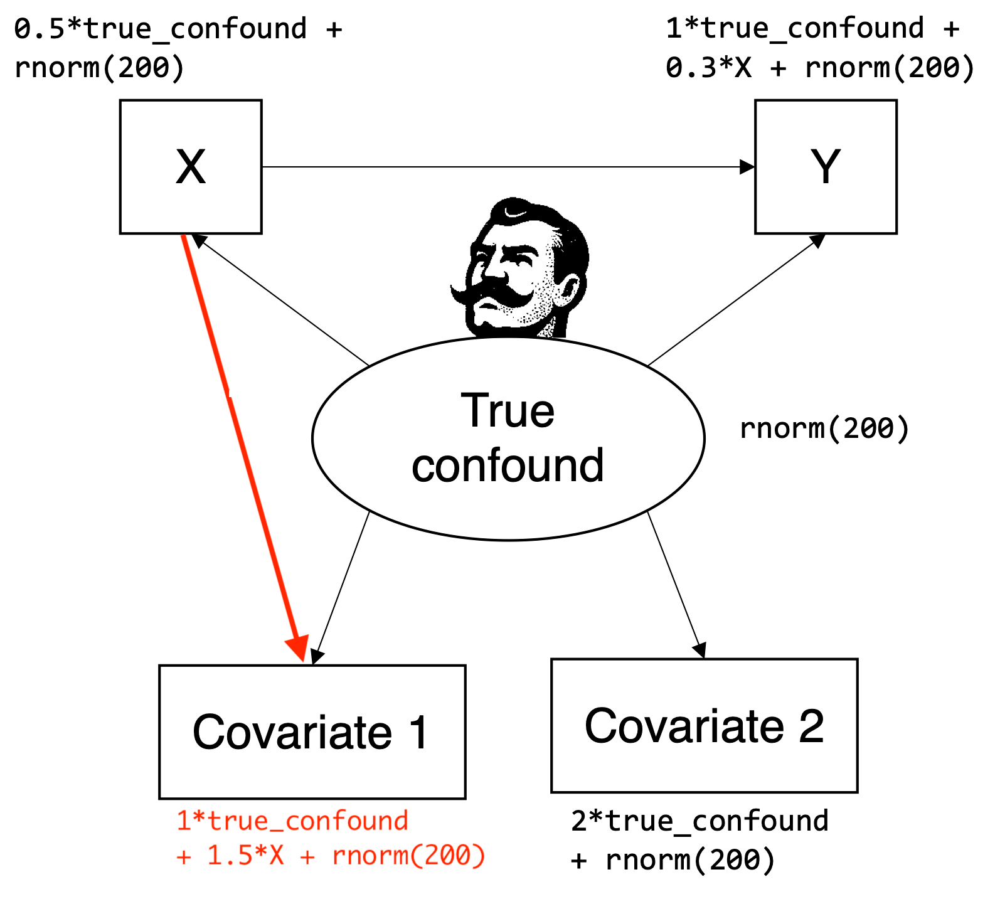

In this post, I present an extended scenario where one measure of the latent confounder is causally affected by the treatment (i.e., measurement invariance does not hold for this indicator) while the other measure is not. I show by simulation that in this case, it can be better to only use the measurement-invariant measure when controlling for the latent confounder.
Reproduce Julia Rohrer’s simulated scenario
Before playing around with alternative scenarios, I wanted to reproduce JR’s simulation results to make sure that we are on the same page. I reprogrammed her simulation based on the DAG in the original blog post, fitted linear models controlling either for both measures of the confound or only for the indicator with the highest loading on the latent confounder (Covariate 2).
My estimates are very similar to the original blog post:
The average estimate for the causal effect of X on Y from the model controlling for both measures (\(M_{est} = 0.380\)) is closer to the true value of 0.3 than the estimate from the model controlling only for Covariate 2 (\(M_{est} = 0.395\)). The RMSE values are also very similar to JR’s results with \(RMSE = 0.110\) when controlling for both and \(RMSE = 0.122\) when controlling only for Covariate 2.
Simulate extended scenario in which measurement invariance does not hold for Covariate 1
I have recently thought a lot about causal perspectives on measurement invariance (Sterner et al. 2024), and I know that JR has also worked on that topic (Rohrer and Paulewicz 2025). So when I read JR’s blog post (which focused on multicollinearity and not measurement invariance), I was immediately asking myself under which circumstances the recommendation to control for both covariates would not be valid. My intuition was that for measures of the true confounder that are not measurement-invariant (i.e., indicators that are also causally affected by other variables than the latent confounder), it should be possible to construct scenarios in which the non-invariant measures should better not be used to control for the confounder.
One interesting scenario I came up with is when a measure of the True confound is also causally affected by the treatment. In JR’s toy example, X is math self-concept, Y is school grades, and the True confound is cognitive abilities. A (hopefully) somewhat plausible case based on the original example might be that Covariate 1 is a numeric power test from an IQ test battery (i.e., a test in which participants have no time limit to complete rather difficult tasks). In contrast, Covariate 2 is a non-numeric speed test from the same IQ test battery (i.e., a test in which participants must complete as many rather simple tasks as possible in limited time). For the sake of the argument, let’s assume that because the test represented by Covariate 2 does not look like a math problem, the score will not be directly affected by the participants’ math self-concept. However, the test represented by Covariate 1 looks like a math problem, thus participants with a low math self-concept get discouraged, tend to give up early to find the right solution, and achieve lower test scores.
In line with this hypothetical scenario, I have simulated data according to the extended data-generating process displayed in Figure 1.

Figure 1: Extended DAG adapted from JR’s blog post (figure copied from the original post; changes marked in red). In the extended data-generating process, Covariate 1 is also affected by X, while Covariate 2 remains a measurement-invariant measure that is only affected by the True confound.
With the extended data-generating process, the results change:
The average estimate for the causal effect of X on Y from the model controlling for both measures (\(M_{est} = 0.138\)) is now further away from the true value of 0.3 than the estimate from the model controlling only for Covariate 2 (\(M_{est} = 0.395\)). The RMSE values are now \(RMSE = 0.210\) when controlling for both and \(RMSE = 0.122\) when controlling only for Covariate 2.
Rethink recommendation to control for all available measures of a latent confounder
With the extended data-generating process, JR’s blog title …
If you have two measures of the same confounder, you can just include both of them in your regression model
… seems not always to be good advice. Instead, it might be better to only control for “clean” measurement-invariant measures of the True confound, which in my scenario is Covariate 2.
However, whether controlling for both measures actually yields a worse result than only controlling for Covariate 2 depends on the actual size of all path coefficients in the data-generating process. That is because in the current DAG, the estimate for the causal effect of X on Y is biased for two different reasons: On the one hand, we have “measurement bias”, because we must control for the True confound but can only do so using imperfect indicators (Covariates 1 and 2). As long as we have only measurement-invariant indicators (like in the original scenario), using more of them in our regression model should be a good idea because we then measure the confounder more accurately. On the other hand, we have “selection bias” because controlling for the not measurement-invariant Covariate 1 opens a colliding path (X -> Covariate 1 <- True confound -> Y; similar to model 16 in Cinelli, Forney, and Pearl (2024)). Because both biases are present, whenever some indicators are not measurement-invariant, the optimal control strategy would depend on the actual size of the path coefficients because we can construct edge cases, in which both biases cancel each other out:
Code
R<-10000n<-200set.seed(42)sim3<-replicate(R, expr ={true_confound<-rnorm(n)X<-0.5*true_confound+rnorm(n)Y<-1*true_confound+0.3*X+rnorm(n)covariate1<-1*true_confound+0.5*X+rnorm(n)# cancel out both biases with 0.5*Xcovariate2<-2*true_confound+rnorm(n)mod_ctrl_both<-lm(Y~X+covariate1+covariate2)mod_ctrl_cov2<-lm(Y~X+covariate2)c(est_ctrl_both =coef(mod_ctrl_both)["X"], est_ctrl_cov2 =coef(mod_ctrl_cov2)["X"])})M_est_ctrl_both_sim3<-mean(sim3["est_ctrl_both.X",])M_est_ctrl_cov2_sim3<-mean(sim3["est_ctrl_cov2.X",])RMSE_ctrl_both_sim3<-sqrt(mean((sim3["est_ctrl_both.X",]-0.3)^2))RMSE_ctrl_cov2_sim3<-sqrt(mean((sim3["est_ctrl_cov2.X",]-0.3)^2))
In our example, if we set the problematic path (X -> Covariate 1) to 0.5, the regression model controlling for both measures would estimate the causal effect of 0.3 almost perfectly (\(M_{est} = 0.299\)), but this would more or less be a coincidence. In a real application, we do not know the actual size of the path coefficients and can thus not determine whether including the non-invariant measure would be a good idea.
To sum up, I think a better recommendation would be something like:
If you have multiple measures of the same confounder, think hard about which measures might not be measurement-invariant (i.e., could be affected by the treatment or the outcome in your specific application), and include as many of the measurement-invariant ones in your regression model as possible.
Of course, as also mentioned in JR’s post, we could always go one step further and try to test or specify violations of measurement invariance in a structural equation model (Sterner et al. 2024).
In closing, I want to stress that JR never claimed to provide general advice. I very much liked the original post (like most entries on The 100% CI blog) and I totally agree that traditional statistics education places a wrong emphasis on multicollinearity, while we should put a stronger focus on causal inference.
References
Cinelli, Carlos, Andrew Forney, and Judea Pearl. 2024. “A Crash Course in Good and Bad Controls.”Sociological Methods & Research 53 (3): 1071–1104. https://doi.org/10.1177/00491241221099552.
Rohrer, Julia M., and Borysław Paulewicz. 2025. “Rethinking Measurement Invariance Causally.”Current Research in Ecological and Social Psychology 9: 100241. https://doi.org/https://doi.org/10.1016/j.cresp.2025.100241.
Sterner, Philipp, Florian Pargent, Dominik Deffner, and David Goretzko. 2024. “A Causal Framework for the Comparability of Latent Variables.”Structural Equation Modeling: A Multidisciplinary Journal 31 (5): 747–58. https://doi.org/10.1080/10705511.2024.2339396.
@online{pargent2025,
author = {Pargent, Florian},
title = {If You Have Two Measures of the Same Confounder, It Might Be
Better to Only Control for the Measurement-Invariant One.},
date = {2025-11-24},
url = {https://FlorianPargent.github.io/posts/003_mi-response_to_100_ci/003_mi-response_to_100_ci.html},
langid = {en}
}
![]()